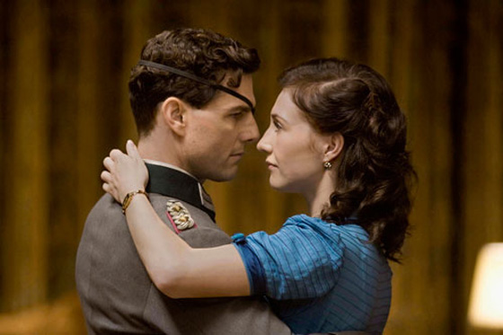
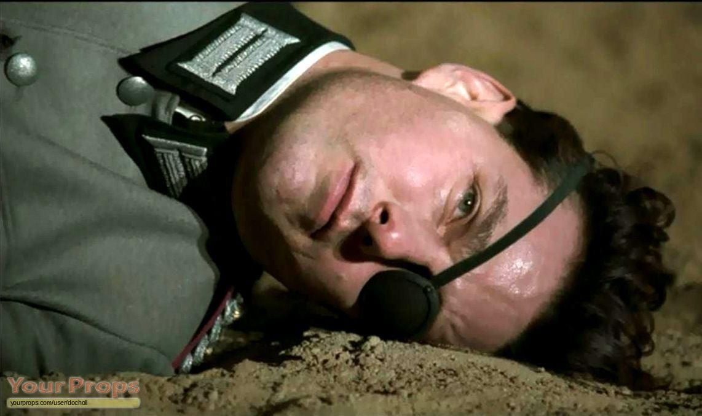
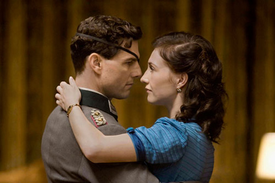
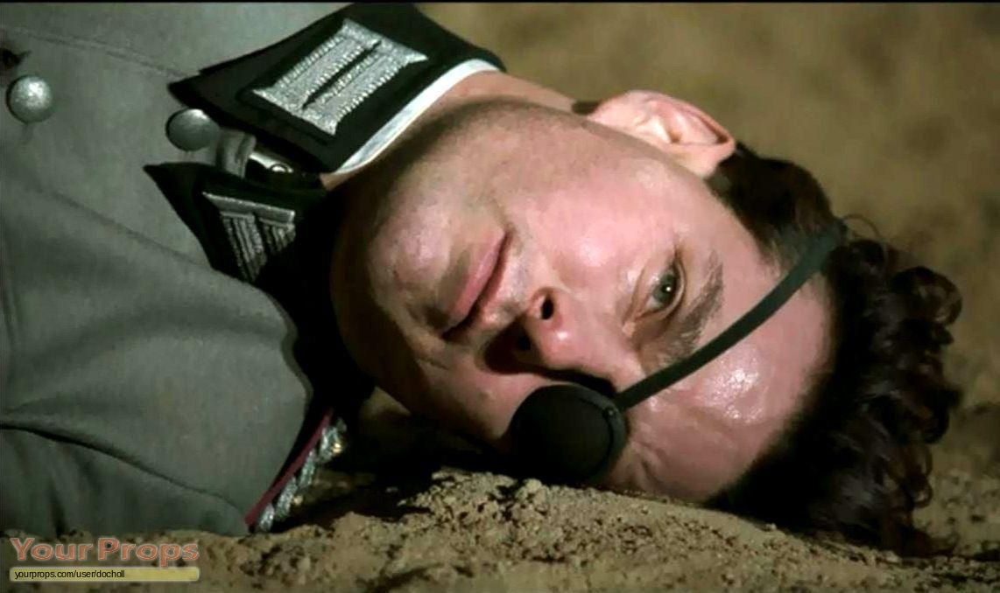

Valkyrie
- Genre
- Krig
- Lengde
- 115 minutter
- Skuespillere
- Tom Cruise, Bill Nighy, Kenneth Branagh, Stephen Fry, Tom Wilkinson, Carice Van Houten
- Kort sammendrag
- Den medrivende thrilleren forteller om en dristig operasjon som ble satt i gang for å ta livet av en av tidenes ondeste diktatorer.
Andre har gitt denne filmen: 4.3 stjerner
- Handling
- Tom Cruise gjør en sterk rolleprestasjon i denne actionfylte filmen fra regissøren av De mistenkte og X-Men. Handlingen er basert på den utrolige, men sanne historien om oberst Claus von Stauffenberg (Cruise) og hans oppfinnsomme attentatplan mot Adolf Hitler.
- Produsert
- USA 2008
- Regissører
- Bryan Singer
 


